I'm a biological engineering PhD candidate at MIT advised by Dan Anderson and Bob Langer. I work at the intersection of biochemical engineering and data science to build better nanomedicines. I'm a Siebel Scholar, MIT HEALS fellow, and MIT Jameel Clinic fellow.
I completed my bachelors and masters in biomedical engineering at Yale. I've previously worked at Click Therapeutics, D. E. Shaw, and Simplex Sciences.
My other research interests include systems neuroscience—where I helped build and actively maintain the Yale Brain Atlas—and cognitive psychology, where I helped identify the implied truth effect.
ChemrXiv
(2026)Quantitative Cryogenic Orbitrap Secondary Ion Mass Spectrometry for structural characterisation of lipid nanoparticles
Roberts J, Kotowska A, Aguilar-Bejarano E, Collins E, Witten J, Howard A, Trindade G, Gilmore I, Hook A, Winkler D, Alvey K, Figueredo G, Scurr D J, Anderson D G, Alexander M R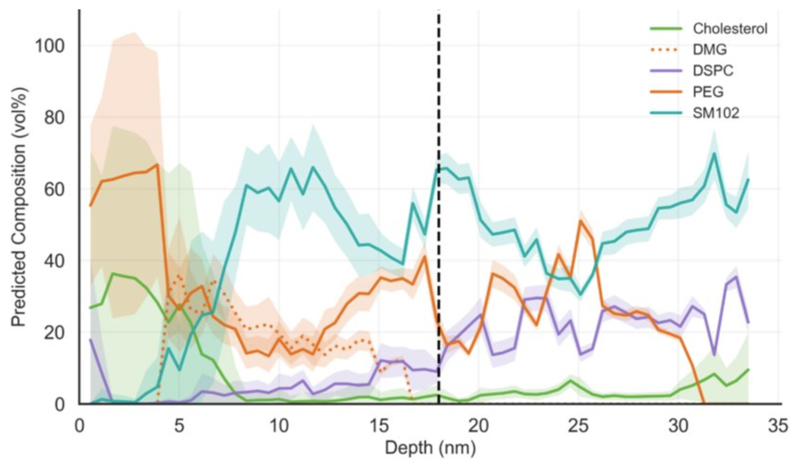
Epilepsia
(2026)Translating a review of language function to the parcellation of a high-resolution brain atlas
Watson E, Collins E, Chishti O, Bose-Roy R, McGrath H, Segal N A, Lehman R, Sivaraju A, Zaveri H P, Spencer D D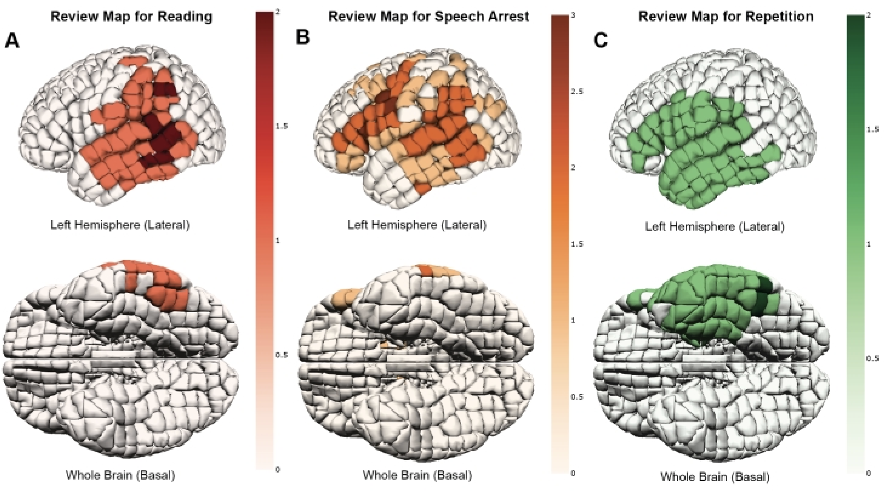
Nature Communications
(2026)Lipid Nanoparticle Database towards structure-function modeling and data-driven design for nucleic acid delivery
Collins E*, Ji J*, Kim SG*, Witten J, Kim S, Zhu R, Park P, Jung M, Park A, Manan R S, Rudra A, Jeang W J, Langer R, Anderson D G, Im W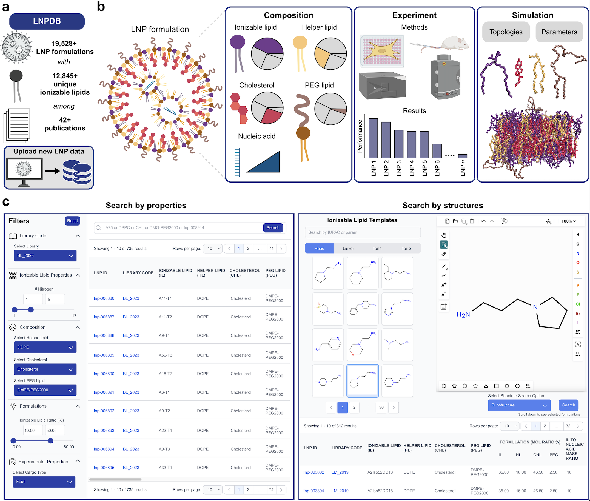
Neurology
(2025)Multitask Language Mapping to Visualize the Spatial Configuration of Polyfunctional Language Cortex
Chishti O, Collins E, McGrath H, Zhang T, Quraishi I H, Hirsch L J, Benjamin C, Damisah E C, Zaveri H P, Spencer D D, Sivaraju A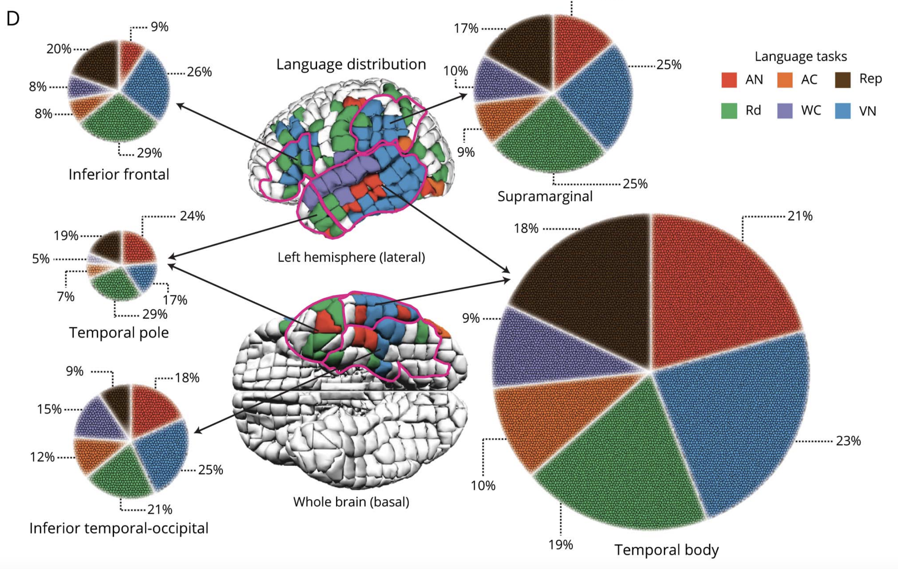
Nature Computational Science
(2025)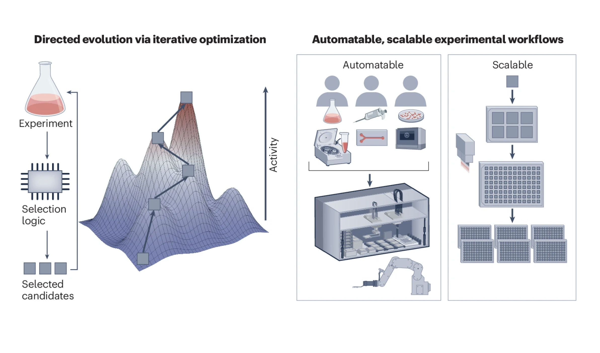
Frontiers in Network Physiology
(2025)Yale Brain Atlas to interactively explore multimodal structural and functional neuroimaging data
Collins E, Chishti O, McGrath H, Obaid S, King A, Qiu E, Gabriel E, Shen X, Arora J, Papademetris X, Constable T R, Spencer D D, Zaveri H P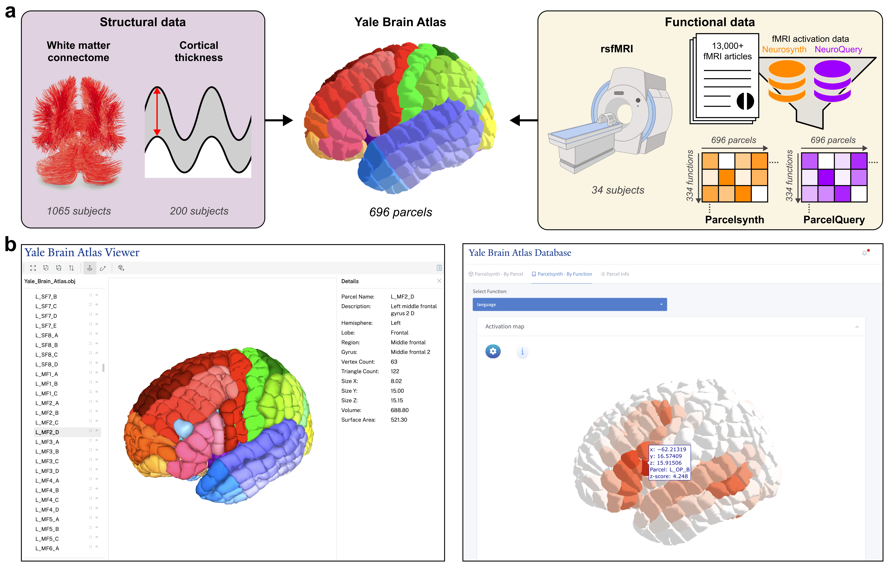
Advanced Materials
(2025)Antifouling Immunomodulatory Copolymer Architectures that Inhibit the Fibrosis of Implants
Jeang W J*, Wong B M*, Zhao Y, Manan R, Jiang A L, Bose S, Collins E, McMullen P, Rosenboom J, Lathwal S, Langer R, Anderson D G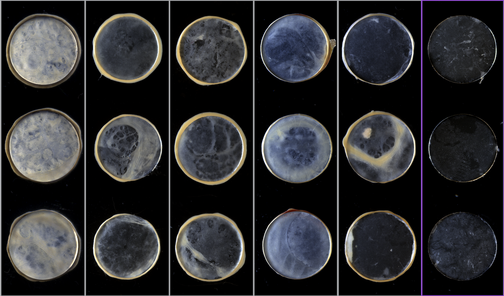
Nature Biotechnology
(2024)Artificial intelligence-guided design of lipid nanoparticles for pulmonary gene therapy
Witten J*, Raji I*, Manan R S*, Beyer E, Bartlett S, Tang Y, Ebadi M, Lei J, Nguyen D, Oladimeji F, Jiang A Y, MacDonald E, Hu Y, Mughal H, Self A, Collins E, Yan Z, Engelhardt J F, Langer R, Anderson D G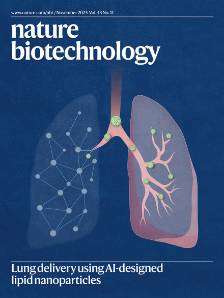
Nature Communications
(2024)Mapping the structure-function relationship along macroscale gradients in the human brain
Collins E, Chishti O, Obaid S, King A, McGrath H, Shen X, Arora J, Papademetris X, Constable T R, Spencer D D, Zaveri H P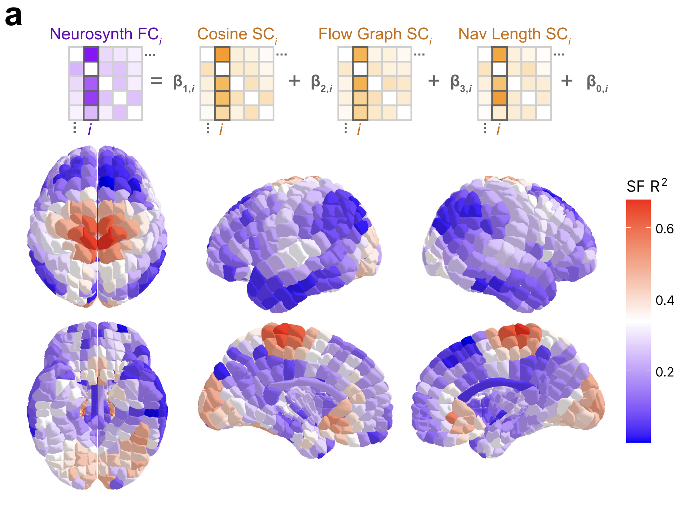
Brain Stimulation
(2024)Systematic 1 Hz Direct Electrical Stimulation for Seizure Induction: A Reliable Method for Localizing Seizure Onset Zone and Predicting Seizure Freedom
Sivaraju A, Quraishi I, Collins E, McGrath H, Ramos A, Turk-Browne N, Zaveri H P, Damisah E, Spencer D D, Hirsch L J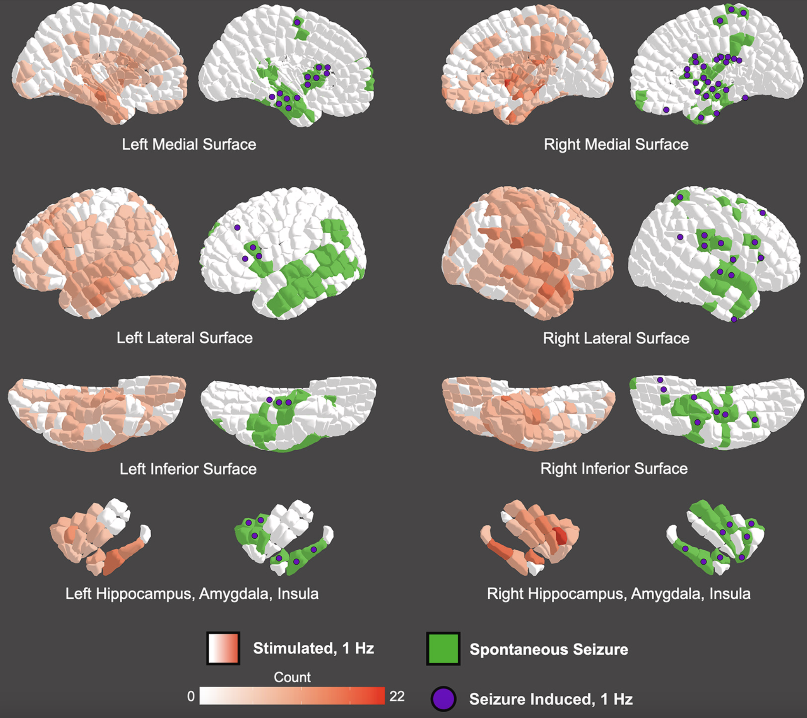
Scientific Reports
(2022)High-resolution cortical parcellation based on robust brain landmarks for precise localization of multimodal data
McGrath H, Zaveri H P, Collins E, Jafar T, Chishti O, Obaid S, Ksendzovsky A, Wu K, Papademetris X, Spencer D D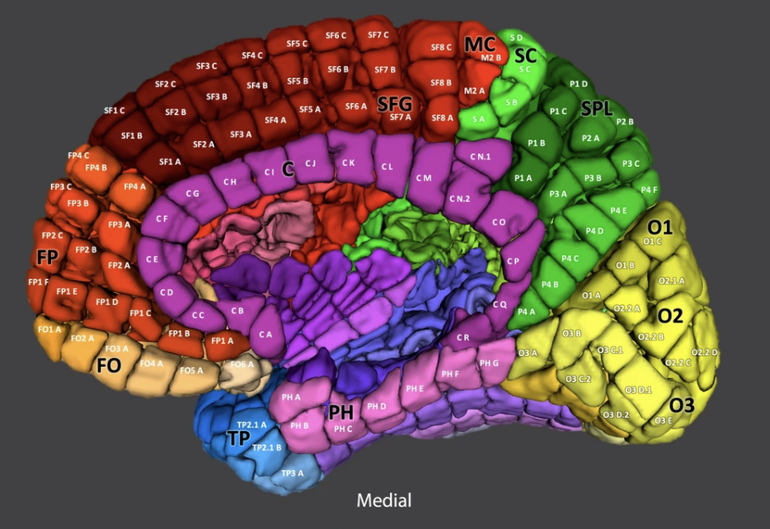
Management Science
(2020)The Implied Truth Effect: Attaching Warnings to a Subset of Fake News Headlines Increases Perceived Accuracy of Headlines Without Warnings
Pennycook G, Bear A, Collins E, & Rand D G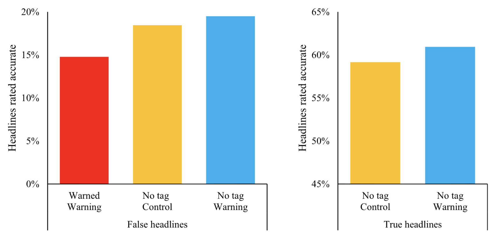
No publications match your search.
Yale News
(2024)
Yale Daily News
(2020)
MIT News
(2020)
No articles match your search.